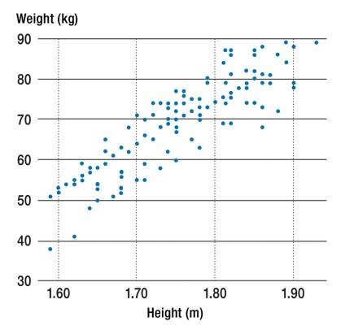
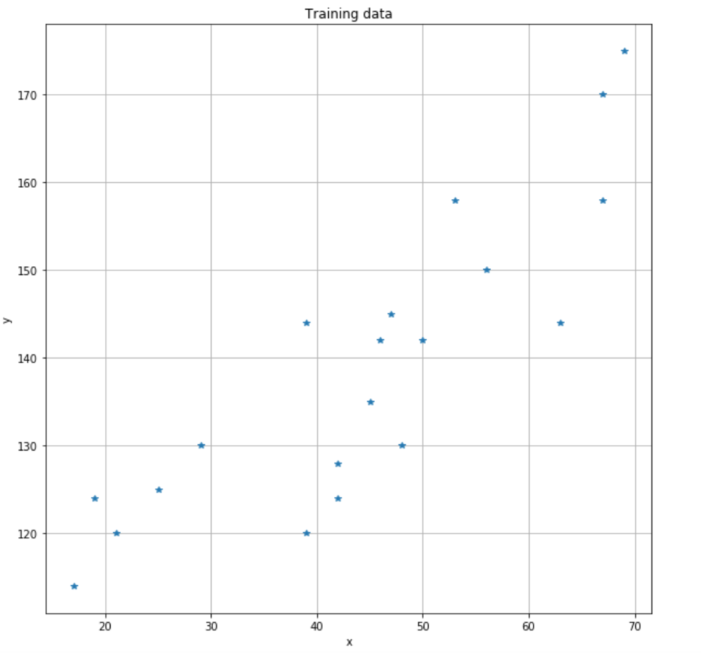
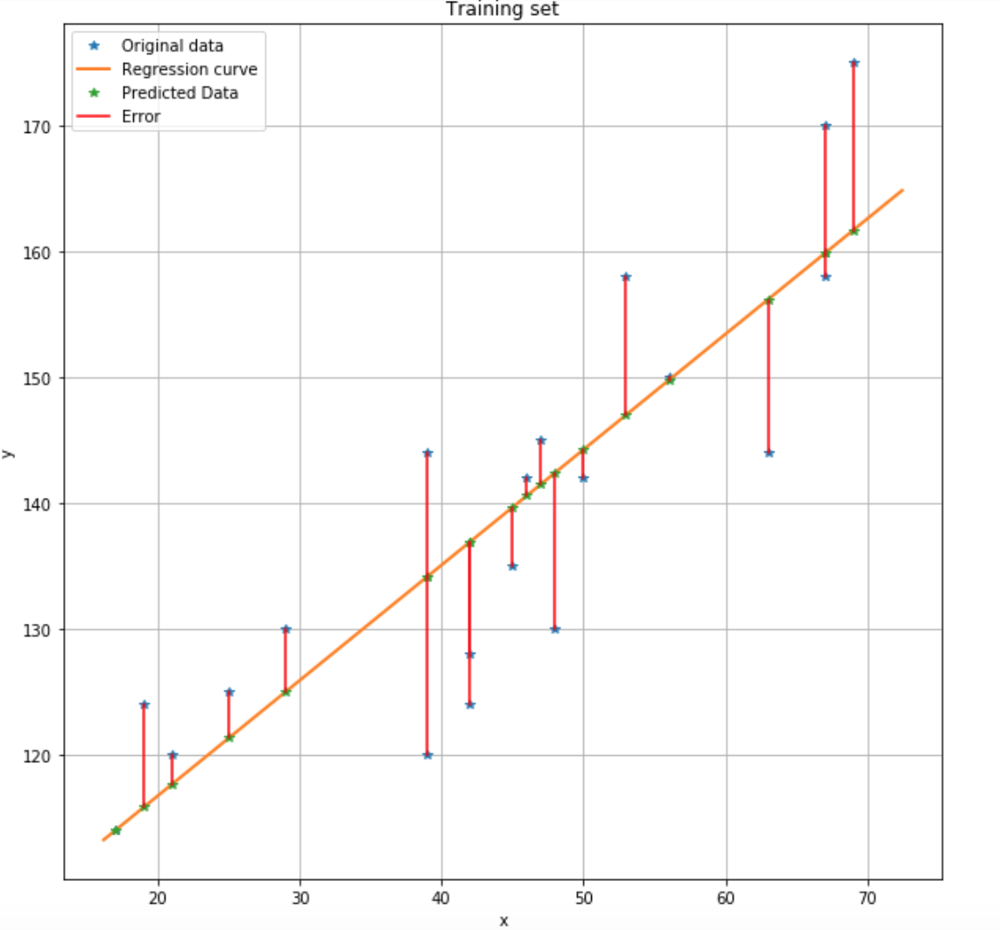
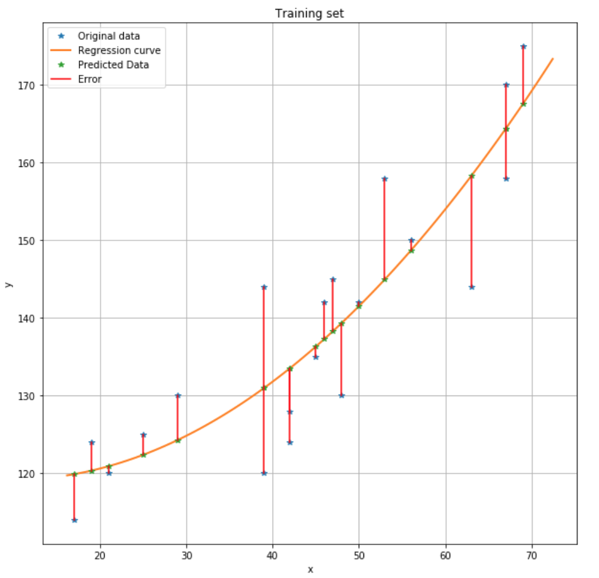

Topic 2.1: Linear regression¶
This notebook combines theory with exercises to support the understanding of linear regression in computer-aided diagnosis. Implement all functions in the code folder of your cloned repository, and test it in this notebook after implementation by importing your functions to this notebook. Use available markdown sections to fill in your answers to questions as you proceed through the notebook.
Contents:
Linear regression (theory)
Implementing linear regression
Polynomial regression and model selection

1. Linear regression (theory)¶
Linear regression is an indispensable tool for statistical analysis and can be considered the most basic building block of neural networks. In its simplest terms, univariate linear regression helps estimate the association between a continuous dependent variable (outcome) and an independent explanatory variable (predictor) by fitting a linear equation to observed data. Multivariate linear regression then uses two or more independent variables to predict certain outcome. In medical applications, linear regression allows for the identification of prognostically important risk factors (e.g. weight, blood pressure, etc.).

Figure from “Linear Regression Analysis (Deutsches Ärzteblatt International)”.
The equation for linear regression is expressed as \(Y = a + bX\), where \(X\) is the independent variable and \(Y\) is the dependent variable. \(b\) denotes the slope of the linear regression line, and \(a\) is the intercept (\(y\) at \(x=0\)).
To graphically visualize linear relationship and its strength between two variables, a scatterplot is commonly used. A fitted regression line (via the least squares method) across all data points then shows either an increasing or decreasing trend. Numerically, the association strength between two variables can be evaluated using the correlation coefficient (\(R^{2}\)), followed by calculating the \(p\)-value to determine statistical significance.
After fitting a regression line to a group of data, deviations from the fitted line to the observed values (the so-called residuals) allow the observer to inspect the validity of their assumption and accept/reject the hypothesis that a linear relationship exists.
Computed regression lines may be affected by outliers (data points lying far away from the main data cluster in the scatterplot). Depending on their position, outliers may have a major impact on the computed trend since these data points may represent erroneous data. The effect of outliers as well as influential observations (horizontally distant points) should be properly investigated and such data potentially removed.
2. Implementing linear regression¶
The optimal parameters of a linear regression model given a training dataset of features X and targets y can be obtained with the closed-form solution for minimization of the loss function:
The function ls_solve() that you have implemented in the point-based registration practical (SECTION 2 of the registration.py module) can be reused to solve for the parameters \(\theta\).
The linear_regression() Python script in SECTION 1 of the cad_tests.py module reads a toy dataset split into training, validation and testing subsets, computes the parameters of a linear regression model and visualises the results for the training and testing datasets. The toy dataset consists of a single feature and a target variable. For example, the target that we want to predict can be a person’s systolic blood pressure and age can be the single feature that describes the person.
Such a “small” problem is not often encountered in practice but it can be very illustrative for this technique (in the project work you will work with a more “practical” medical image analysis problem).
The first section of linear_regression() loads the training, validation and testing datasets that will be used for training and evaluation of the linear regression model. It also shows a plot of the feature vs. the target variable. We can observe from the plot that the value of the target tends to increase together with the value of the feature.

Question 2.1:¶
What is role of these three subsets in training and evaluating machine learning models?
Type your answer here

Exercise 2.1:¶
Implement the missing functionality of linear_regression() that computes the parameters Theta of the linear regression model. Note that you will have to add a column of all ones to the data matrix, for which you can use the provided addones() function in the cad_util.py module.
If you have implemented this correctly, the results for the training set should look like in the figure below.

[3]:
%matplotlib inline
import sys
sys.path.append("../code")
from cad_tests import linear_regression
E_validation, E_test = linear_regression()
Exercise 2.2:¶
How can you compute the error of the linear regression model for the optimal parameters? Implement this at the end of linear_regression().
[5]:
print(E_validation)
print(E_test)
460.76300310329646
476.2773328043631
## 3. Polynomial regression and model selection
Suppose that after examining the results from the linear regression model, your conclusion is that a quadratic model might be a better fit for the data. Instead of a line, the fitted model now resembles a parabola, which is described by the equation \(y = ax^{2} + bx + c\).
Exercise 3.1:¶
Use the existing code for linear regression to implement and evaluate such a model. You can make a copy of linear_regression() called quadratic_regression() and work there.
If you have implemented this correctly, the results for the training set should look like in the figure below:

[6]:
%matplotlib inline
import sys
sys.path.append("../code")
from cad_tests import quadratic_regression
E_validation, E_test = quadratic_regression()
print(E_validation)
print(E_test)
119.05207269217564
78.30058034879328
Question 3.1:¶
You now have implemented both linear and quadratic regression. Compare the quadratic regression to the linear regression model. Which model would you choose and why?
Type your answer here
Question 3.2:¶
After choosing one of the two models, you have to report the error. For which dataset should you report the error?
Type your answer here
References¶
[1] Schneider, Astrid et al. “Linear regression analysis: part 14 of a series on evaluation of scientific publications.” Deutsches Arzteblatt international vol. 107,44 (2010): 776-82. doi:10.3238/arztebl.2010.0776